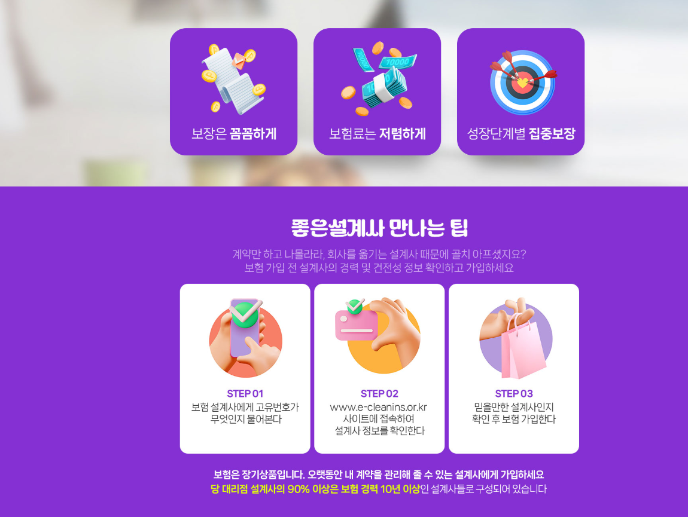
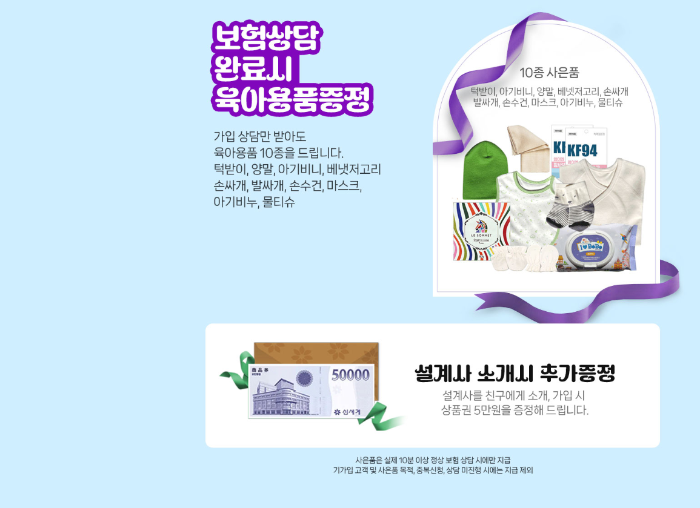
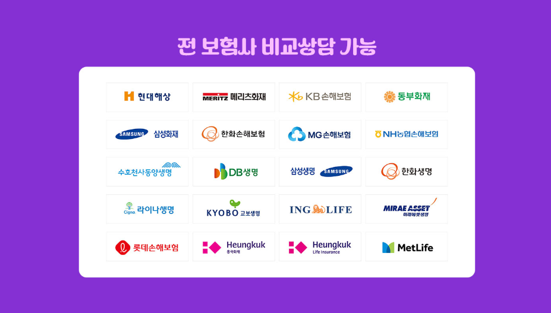

현대해상 태아보험을 알아보는 예비 부모라면 언제 가입을 준비해야 하는지, 어떤 보장을 중심으로 비교해야 하는지 궁금할 수 있습니다. 태아보험은 가입 시점과 개인별 조건에 따라 가입 가능 여부와 보장 구성이 달라질 수 있기 때문에 충분히 비교한 뒤 결정하는 것이 좋습니다.
1. 현대해상 태아보험을 알아볼 때 중요한 점
태아보험은 임신 기간 중 가입을 준비하고 출생 이후 어린이보험 형태로 보장을 이어가는 상품 구조가 일반적입니다. 상품마다 가입 조건과 보장 범위가 다를 수 있기 때문에 단순히 보험료만 비교하기보다는 필요한 보장이 포함되어 있는지 확인해야 합니다.
특히 출산 전후 발생할 수 있는 상황과 성장 과정에서 필요한 보장을 함께 고려하는 경우가 많습니다. 다만 보장을 지나치게 많이 추가하면 장기간 납입해야 하는 보험료 부담도 커질 수 있으므로 가족의 상황에 맞게 구성하는 것이 중요합니다.
2. 태아보험은 가입 시기도 확인하세요
태아보험은 임신 주수에 따라 선택 가능한 특약이나 가입 조건이 달라질 수 있습니다. 따라서 가입을 고려하고 있다면 원하는 보장을 선택할 수 있는 시기를 미리 확인해보는 것이 좋습니다.

실제 가입 가능 시기와 특약 구성은 보험상품과 가입자의 상황에 따라 달라질 수 있으므로 상담 및 상품설명서를 통해 정확하게 확인해야 합니다.
3. 보장내용과 보험료를 함께 비교하기
같은 태아보험이라도 가입자의 조건과 선택하는 보장에 따라 보험료는 달라질 수 있습니다. 따라서 월 보험료가 저렴한지만 확인하기보다 실제로 어떤 상황에서 얼마만큼 보장받을 수 있는지를 함께 살펴보는 것이 좋습니다.

또한 갱신 여부와 보험기간, 납입기간 등을 함께 확인하면 장기간 유지할 때 발생할 수 있는 부담을 예상하는 데 도움이 됩니다. 여러 설계안을 같은 조건으로 비교하면 차이를 파악하기가 더 쉽습니다.
4. 가입 전에는 여러 조건을 비교해보세요
태아보험은 한 번 가입하면 오랫동안 유지할 수 있는 보험인 만큼 처음부터 충분히 비교하는 과정이 중요합니다. 가족력과 기존 보험, 월 납입 가능 금액 등을 고려해 필요한 보장을 중심으로 살펴보는 것이 좋습니다.

불필요한 보장을 무조건 많이 구성하기보다는 필요한 항목을 우선적으로 확인하고 상품별 차이를 비교해보세요. 최종 가입 전에는 반드시 상품설명서와 약관을 확인하는 것이 중요합니다.
현대해상 태아보험 FAQ
Q. 태아보험은 언제 알아보는 것이 좋은가요?
가입 시점에 따라 선택 가능한 보장과 조건이 달라질 수 있어 가입을 고려한다면 임신 기간 중 미리 상품별 가입 조건을 확인하는 것이 좋습니다.
Q. 태아보험은 보험료만 비교하면 되나요?
보험료뿐 아니라 보장 범위와 보험기간, 납입기간, 갱신 여부와 지급 조건 등을 함께 비교하는 것이 좋습니다.
Q. 사람마다 보험료가 달라질 수 있나요?
선택한 보장과 가입 조건 등에 따라 실제 보험료와 가입 가능 여부가 달라질 수 있으므로 개별적인 확인이 필요합니다.